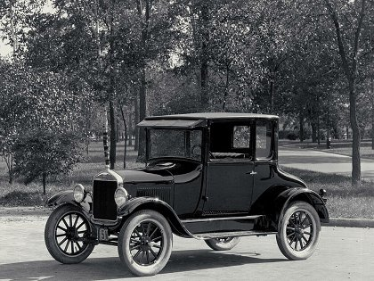

L'histoire de la Ford Model T, souvent appelée simplement la "Ford T", est étroitement liée à l'évolution de l'industrie automobile et à l'influence majeure d'Henry Ford. La Ford T est devenue emblématique en raison de son impact sur la production automobile de masse et sur la démocratisation de l'automobile aux États-Unis.
Conception et Lancement (1908) :
La Ford Model T a été conçue par Henry Ford et son équipe d'ingénieurs. Elle a été officiellement lancée en 1908. La voiture était relativement simple et robuste, avec un moteur à quatre cylindres de 20 chevaux, monté à l'avant. Elle était disponible en plusieurs styles de carrosserie, mais la majorité des premières Ford T étaient des voitures découvertes.
Standardisation et Production de Masse :
L'innovation clé de la Ford T était son processus de production. Henry Ford a introduit des techniques de standardisation et de production de masse dans l'usine de production de Highland Park à Détroit. En 1913, Ford a mis en œuvre la chaîne de montage mobile, une méthode révolutionnaire qui a permis de réduire considérablement le temps nécessaire à l'assemblage d'une voiture, passant de plusieurs jours à seulement 93 minutes.
Baisse des Coûts et Accessibilité :
Grâce à l'efficacité accrue de la production de masse, les coûts de fabrication de la Ford T ont considérablement diminué. En conséquence, le prix de vente de la voiture a également chuté, la rendant abordable pour un plus grand nombre de personnes. En 1924, la Ford T était vendue à moins de 300 dollars, ce qui a permis à de nombreuses familles américaines d'acquérir leur première voiture.
Popularité et Impact Culturel :
La Ford T est devenue extrêmement populaire aux États-Unis. Sa simplicité, sa fiabilité et son prix abordable ont contribué à changer la manière dont les gens se déplaçaient. Elle a également eu un impact significatif sur la vie rurale, permettant aux agriculteurs d'accéder plus facilement aux marchés et aux services.
Fin de la Production :
La production de la Ford T a continué jusqu'en 1927, date à laquelle elle a été remplacée par la Ford Model A. Plus de 15 millions d'exemplaires de la Ford T ont été produits au total, faisant d'elle l'une des voitures les plus vendues de tous les temps.
La Ford Model T est souvent considérée comme une voiture qui a révolutionné l'industrie automobile en introduisant la production de masse et en rendant l'automobile accessible à un large public. Elle a marqué le début d'une ère où les voitures n'étaient plus des produits de luxe réservés à une élite, mais devenaient des biens de consommation courante pour la classe moyenne.